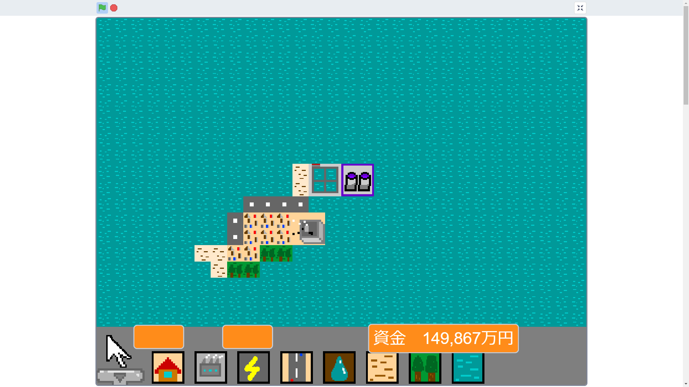
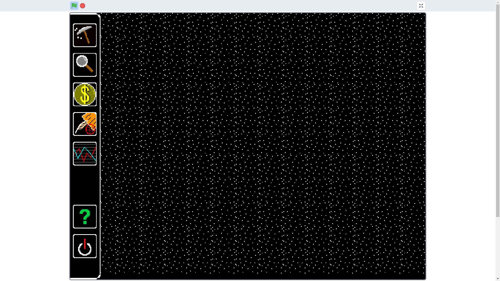

★★★最高のUXをあなたに！！★★★
学生番号：1335
氏名：村上 律
UXエンジニアとは、Webサイトなどのサービスをユーザーが使いやすいように工夫し、
UXを向上させる仕事です。UXエンジニアという言葉ができてから
まだ数年しかたっていない新しい仕事です。
UXは（User Experience)の略。ユーザーがサービスを使用することで
得られる経験・感想のことです。
「おしゃれなWebページ」「使いやすいボタンの配置」など
主にWebサイトのフロントエンドの制作です。
制作だけでなく、サービスを利用するユーザーの行動の分析も行います。
サービスの使用率などから改善点を洗い出して、より使いやすいサービスを目指して改良を
施します。
私は小学生の頃、Scratchでゲームを作っていたからです。
街を発展させるシミュレーションゲームや、石油の採掘・加工・販売を行う
シミュレーションゲームのUIを作るのを楽しんでいました。

街をつくり、発展させるシミュレーションゲーム

石油の採掘・加工・販売を行う シミュレーションゲーム
どのようにボタンを設置すれば遊びやすくなるか。どのようなデザインの
ボタンを作ればゲームの雰囲気に合うかを考えていました。
| 電源 | ヘルプ | ||
|---|---|---|---|
| ミッション | 調査 | ||
| 採掘場の建設 | 原油価格・為替情報 |
この経験から、UXエンジニアが私に合うのではないかと考えました。
デザインの知識やWebのフロントエンドの開発に必要な技術が必要です。
Webマーケティングの知識も求められるます。
UXエンジニアの概念はまだ曖昧な部分が多いため、企業によって
仕事内容が異なっています。企業によっては、フロントエンドの開発だけでなく、
バックエンドの開発も行います。
・Webサイトの開発に必要な知識・技術
・デザインの知識
・Webマーケティングの知識
https://tomorrowgate.co.jp/blog/1194/
https://freelance.levtech.jp/guide/detail/596/
https://type.jp/et/feature/11529/
https://miz2403.com/nineties/
https://1-notes.com/flash-animation/
https://techacademy.jp/magazine/5827